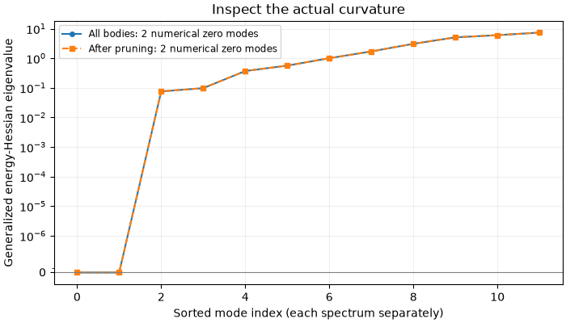
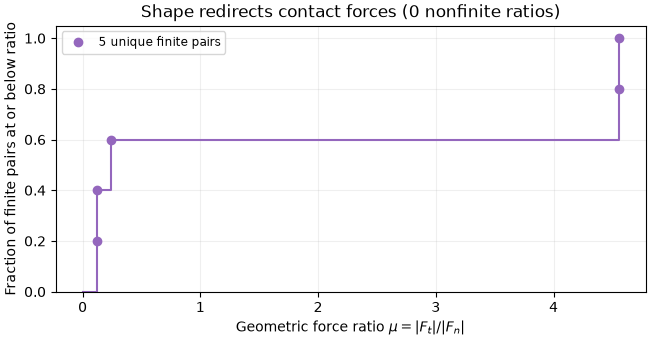
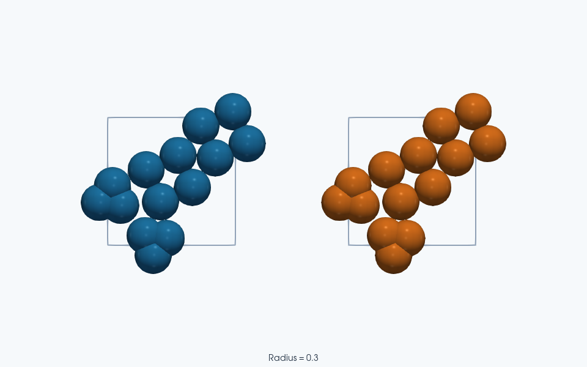

Note
Go to the end to download the full example code.
Jammed rigid clumps: contacts, rattlers, dynamical matrix, and friction#
This is the rigid-clump counterpart of Jammed bidisperse packing: contacts, rattlers, and the dynamical matrix. Four tiny clumps keep construction, relaxation, and Hessian calculation quick. Two sizes and two shapes exercise the body-level API; this very small system is not a bulk jamming or friction measurement.
A clump changes the mechanical coordinates of the problem. Its member spheres move together through a center translation and an orientation change, so a rigid body has
One body-body neighbor can supply several vertex contacts, and each vertex contact can constrain translation and rotation through its lever arm. We therefore distinguish vertex-contact counts, neighboring-body counts, and the rank of the generalized contact Jacobian. The derivation below connects these counts to the energy Hessian without assuming that every contact is independent.
Finally, get_group_contacts() decomposes the net
force between each clump pair along its COM-to-COM axis. The resulting
mu = |F_t| / |F_n| is geometric friction caused by shape; the sphere
contacts themselves use only a normal spring, with no Coulomb friction law.
Build small mixed-shape clumps#
import jax
jax.config.update("jax_enable_x64", True)
import numpy as np
import matplotlib.pyplot as plt
import jaxdem as jdem
from jaxdem.utils import (
count_clump_contacts,
count_vertex_contacts,
get_clump_rattler_ids,
get_contacts,
get_group_contacts,
remove_rattlers,
)
from jaxdem.utils.dynamical_matrix import clump_non_bonded_hessian, zero_mode_mask
from jaxdem.utils.jamming import bisection_jam
from jaxdem.utils.particle_creation import build_ga_system
Use reduced units with particle masses and stiffness of order one. Two clumps have bounding radius 0.5 with three asperities, and two have radius 0.7 with four asperities. Mixing sizes and shapes discourages a simple repeated arrangement without making this small sample a bulk measurement.
particle_radius is the bounding-sphere radius: centers of equal-radius
asperities lie at particle_radius - asperity_radius from the body COM.
Internal member overlaps are harmless for the contact dynamics because the
collider excludes intra-clump pairs. They must still be accounted for when
calculating the body’s mass, volume, and inertia.
phantom includes the central core when calculating those properties,
then removes it from contact geometry. Thus the nominal packing fraction
refers to that prescribed material volume, not just the exposed asperity
spheres. The deterministic Fibonacci mesh avoids a preliminary iterative
mesh optimization; it leaves the subsequent jamming protocol unchanged.
dim = 2
d_f = 3
state, system = build_ga_system(
particle_radii=[0.5, 0.5, 0.7, 0.7],
vertex_counts=[3, 3, 4, 4],
asperity_radius=0.3,
phi=0.45,
dim=dim,
particle_type="clump",
core_type="phantom",
domain_type="periodic",
randomize_orientation=True,
# 2D union properties are analytical; no large sampling budget is needed.
n_property_samples=256,
mesh_type="fibonacci", # deterministic points avoid a mesh minimization
compression_step=0.05,
compression_force_tol=1e-6,
max_n_min_steps_per_outer=3_000,
fire_dt=0.05,
dt=0.05,
minimizer=jdem.fire,
minimizer_kw={"dt": 0.05},
collider_type="naive",
seed=0,
)
Jam with bounded, explicit tolerances#
build_ga_system() constructs each
rigid shape, distributes it, and relaxes the packing at the initial target
fraction. bisection_jam() then searches in box
size, minimizing each trial. Rigid bodies must relax both translation and
rotation: small net force with a remaining torque is not an equilibrium.
For \(N_v\) constituent spheres, the reported energy is \(e=U/N_v\), not energy per clump. The upper trial satisfies \(e_{\rm tol}<e\leq 4e_{\rm tol}\); the relative packing-fraction bracket must also meet its tolerance. These classify an equilibrated trial separately from the force and torque thresholds used by FIRE.
Check search status before accepting this upper bound. An exhausted search retains states for inspection but does not return a valid jamming fraction.
pe_tol = 1e-8
result = bisection_jam(
state,
system,
pe_tol=pe_tol,
pe_band_factor=4.0,
n_jamming_steps=80,
packing_fraction_increment=0.04,
packing_fraction_tolerance=1e-4,
minimizer_kwargs={"max_steps": 5_000, "force_tol": 1e-7, "torque_tol": 1e-7},
verbose=False,
)
if not bool(result.converged):
raise RuntimeError(
f"Jamming failed: reason={result.reason}, "
f"minimizer_reason={result.minimizer_reason}"
)
state, system = result.jammed_state, result.jammed_system
print(
f"Finite-system nominal phi_J = {float(result.packing_fraction):.6f}; "
f"E per constituent sphere = {float(result.potential_energy):.3e}"
)
assert pe_tol < float(result.potential_energy) <= 4.0 * pe_tol
Finite-system nominal phi_J = 0.843281; E per constituent sphere = 1.059e-08
Vertex contacts versus neighboring clumps#
There are two different contact graphs:
A vertex contact is one force-bearing sphere pair from different bodies. Several such pairs can touch between the same two clumps.
A clump contact is one neighboring-body pair, regardless of how many of their member spheres participate.
Vertex counts enumerate candidate distance constraints; clump counts answer how many neighboring bodies touch. If \(z_I^v\) is the vertex count of body \(I\), then \(N_c=\tfrac12\sum_I z_I^v\) is the number of distinct constituent-pair contacts. Reuse one contact snapshot so both graphs and the rattler screen describe the same state.
state, system, contacts = get_contacts(state, system)
state, system, vertex_counts = count_vertex_contacts(state, system, contacts=contacts)
state, system, clump_counts = count_clump_contacts(state, system, contacts=contacts)
state, system, rattler_ids, non_rattler_ids = get_clump_rattler_ids(
state, system, contacts=contacts
)
N_clumps = int(state.clump_id.max()) + 1
print("Vertex contacts per clump:", np.asarray(vertex_counts))
print("Neighboring clumps per clump:", np.asarray(clump_counts))
print("Rattler clump IDs:", np.asarray(rattler_ids))
Vertex contacts per clump: [4 4 8 8]
Neighboring clumps per clump: [2 2 3 3]
Rattler clump IDs: []
Rattlers and independent constraints#
The default screen removes bodies with fewer than
dim + dim_rot + 1 vertex contacts. It repeats because losing one body
can lower the counts of its neighbors. This is a local coordination test;
it does not measure the linear independence or geometry of constraints.
With generalized coordinates \(q=(\delta r_I,\omega_I)_I\), let \(B_{c\alpha}=\partial r_c/\partial q_\alpha\) describe changes of all vertex-contact separations. For \(N_b\) occupied clumps, rank-nullity gives the unstressed constraint-count identity
A contact’s rotational derivative depends on its lever arm and normal. In 2D, a member at body-relative offset \(s\) has first-order motion \(\delta x=\delta r+\omega\,\hat z\times s\). A contact whose line of action passes through the COM gives no first-order rotational constraint. Multiple contacts between the same neighbors can also have dependent or nearly dependent rows of \(B\).
Consequently, max(0, d_f-k) is only a lower bound on local unconstrained
directions when the neighbors are held fixed, with equality requiring
independent rows. Summing it over bodies is not a collective nullity rule.
At finite overlap, prestress adds further curvature to the energy Hessian.
The rigid-body energy Hessian#
clump_non_bonded_hessian() takes the
second derivative of pair energy with respect to each clump’s translation
and infinitesimal world rotation. In 2D the flattened coordinate order is
(delta x_0, delta y_0, omega_0, delta x_1, ...); the matrix therefore has
shape (3*N_clumps, 3*N_clumps). In 3D the infinitesimal rotation has
three components and the per-body block has six coordinates.
At an equilibrium, the quadratic energy change is
For the active vertex contacts, the chain rule separates constraint stiffness from force-dependent geometric curvature:
The second term is prestress. It includes the second-order displacement of rotating member offsets, not just the first-order lever-arm term. This explains why an unstressed contact count alone cannot determine the true finite-overlap spectrum. The sphere example derives the negative transverse curvature of a compressed spring contact explicitly.
The raw coordinates mix length and angle. Their eigenvalues describe
energy curvature in this coordinate convention, not a coordinate-invariant
list of squared frequencies. With generalized mass matrix \(M\)
containing body masses and world-frame inertia tensors, vibrations obey
\(H u=\omega^2 M u\); diagonalize \(M^{-1/2}HM^{-1/2}\) to obtain
squared frequencies. A rotational length scale is another useful coordinate
choice when comparing unweighted spectra across sizes; the Hessian helper
exposes rotation_scale for coordinates \((\delta r,R\omega)\).
state, system, H = clump_non_bonded_hessian(state, system)
H_np = np.asarray(H)
# The mathematical Hessian is symmetric. Remove roundoff-sized asymmetry
# before passing it to the real symmetric eigensolver.
H_np = 0.5 * (H_np + H_np.T)
eigenvalues = np.linalg.eigvalsh(H_np)
Exact null vectors generally acquire tiny nonzero eigenvalues numerically.
zero_mode_mask searches for a large gap in sorted absolute magnitudes,
grouping roundoff-scale values before comparing ratios. It returns a mask
aligned with the original ordering, also usable on eigenvector columns.
An unclear gap or very soft rotational mode needs inspection rather than
being classified from contact count alone.
zero_mask = np.asarray(zero_mode_mask(eigenvalues))
scale = max(float(np.max(np.abs(eigenvalues))), 1.0)
print("Lowest rigid-body Hessian eigenvalues:", eigenvalues[:8])
print("Numerical zero modes:", int(zero_mask.sum()))
print(
"Resolved negative modes:", int(np.sum((eigenvalues < -1e-7 * scale) & ~zero_mask))
)
Lowest rigid-body Hessian eigenvalues: [9.14036246e-17 1.45600771e-15 7.56756344e-02 9.76402260e-02
3.70172815e-01 5.64169918e-01 1.00551956e+00 1.70377662e+00]
Numerical zero modes: 2
Resolved negative modes: 0
Common translation of all bodies leaves every vertex separation unchanged,
so the potential has dim exact translational null vectors. They have
identical translation entries and zero angular entries in each body block.
A global rotation of centers and bodies is not generally a symmetry of a
fixed periodic box: rotating the configuration without rotating its
lattice can change minimum-image separations. A wall or external trap would
also change which global motions are symmetries.
Verify the known translation vectors directly instead of inferring their presence from a local counting formula or an eigenvalue-gap heuristic.
translations = np.tile(np.vstack((np.eye(dim), np.zeros((1, dim)))), (N_clumps, 1))
np.testing.assert_allclose(H_np @ translations, 0.0, atol=1e-8 * scale)
Remove rattlers and inspect the remaining network#
remove_rattlers() removes every member sphere
of the selected bodies and returns a System initialized for the reduced
state. The surviving clumps are relabeled compactly; the Hessian’s body-row
indexing follows those new IDs. Contact pairs must be collected again before
interpreting them alongside the reduced matrix.
get_clump_rattler_ids already returns clump IDs, exactly what removal
expects. The sphere workflow instead maps particle-row indices through
state.clump_id. Keeping these two ID spaces explicit prevents removing
an unrelated body in a packing with several spheres per clump.
state_nr, system_nr = remove_rattlers(state, system, rattler_ids)
Recompute the spectrum after pruning#
The reduced matrix contains only the surviving generalized coordinates. If the surviving network is rigid at quadratic order, its only zero modes are global translations. Near-zero rotational curvature or resolved negative eigenvalues require a geometric and relaxation check, even after pruning.
state_nr, system_nr, H_nr = clump_non_bonded_hessian(state_nr, system_nr)
H_nr_np = np.asarray(H_nr)
eigenvalues_nr = np.linalg.eigvalsh(0.5 * (H_nr_np + H_nr_np.T))
print("Remaining vertex spheres:", state_nr.N)
print(
"Remaining numerical zero modes:",
int(np.asarray(zero_mode_mask(eigenvalues_nr)).sum()),
)
# A rigid network has only the global translations. Extra rotational soft
# modes or negative modes deserve inspection; graph pruning alone is not a
# proof of stability, particularly for non-generic clump contacts.
Remaining vertex spheres: 14
Remaining numerical zero modes: 2
Compare the two contact counts and the resulting curvature#
Several constituent contacts can connect the same neighboring bodies, so the counts above answer different questions. The signed Hessian spectra expose soft and negative directions without discarding their signs. When pruning removes no bodies, the two spectra coincide; that outcome is also useful evidence about this particular preparation.
fig, ax = plt.subplots(figsize=(7, 4), layout="constrained")
ax.plot(
np.arange(len(eigenvalues)),
eigenvalues,
"o-",
markersize=4,
label=f"All bodies: {zero_mask.sum()} numerical zero modes",
)
ax.plot(
np.arange(len(eigenvalues_nr)),
eigenvalues_nr,
"s--",
markersize=4,
label=f"After pruning: {np.asarray(zero_mode_mask(eigenvalues_nr)).sum()} numerical zero modes",
)
ax.set_yscale("symlog", linthresh=1e-7 * scale)
# Keep zero readable by omitting log ticks inside the linear neighborhood.
ax.set_yticks(
[tick for tick in ax.get_yticks() if tick == 0 or abs(tick) >= 1e-7 * scale]
)
ax.axhline(0.0, color="0.5", linewidth=0.8)
ax.set(
xlabel="Sorted mode index (each spectrum separately)",
ylabel="Generalized energy-Hessian eigenvalue",
title="Inspect the actual curvature",
)
ax.grid(alpha=0.2)
ax.legend(fontsize="small")
plt.show()

Geometric friction for each contacting clump pair#
get_group_contacts() sums every constituent
force on body \(I\) from body \(J\) into \(F_{IJ}\). Define
\(n_{IJ}\) along the minimum-image COM-to-COM displacement. Its normal
and tangential resultants are
For two smooth spheres, a central normal spring gives \(\mu=0\). For clumps, the member-contact normals need not align with the COM axis; off-axis forces can produce a nonzero tangential body-level resultant even though every constituent contact law is frictionless. Thus this ratio quantifies geometric force redirection, not a material Coulomb coefficient or an independently prescribed bound on sliding force.
Contact data are directed: both (I,J) and (J,I) appear. Selecting
I < J keeps one observation per physical pair. sphere_counts records
how many distinct member spheres participate on each side; e.g. (2,3)
describes participating geometry, not the number of individual sphere pairs
or a count of independent mechanical constraints.
state_nr, system_nr, groups = get_group_contacts(state_nr, system_nr)
pairs = np.asarray(groups.pair_ids)
unique = pairs[:, 0] < pairs[:, 1]
mu_values = np.asarray(groups.friction)[unique]
print("Contacting clump pairs:", pairs[unique])
print("Geometric force ratios mu:", mu_values)
print("Participating sphere counts per side:", np.asarray(groups.sphere_counts)[unique])
if len(mu_values):
print(f"Mean geometric mu = {float(np.mean(mu_values)):.4f}")
# Zero normal resultant can give infinite mu; coincident COMs make its axis
# undefined. Inspect such geometry before interpreting a large ratio.
Contacting clump pairs: [[0 2]
[0 3]
[1 2]
[1 3]
[2 3]]
Geometric force ratios mu: [4.55585442 0.12240041 0.12240036 4.55588849 0.23727768]
Participating sphere counts per side: [[3 2]
[1 1]
[1 1]
[3 2]
[3 3]]
Mean geometric mu = 1.9188
Plot every unique body-pair ratio#
The empirical cumulative distribution gives equal weight to each unique contacting pair. A few pairs cannot establish a bulk friction law; the individual markers show the full small sample. Any undefined or infinite ratios are counted in the title rather than placed on a finite axis.
finite_mu = np.sort(mu_values[np.isfinite(mu_values)])
fig, ax = plt.subplots(figsize=(6.5, 3.4), layout="constrained")
if len(finite_mu):
ax.step(
np.r_[0.0, finite_mu],
np.r_[0.0, np.arange(1, len(finite_mu) + 1) / len(finite_mu)],
where="post",
color="tab:purple",
)
ax.plot(
finite_mu,
np.arange(1, len(finite_mu) + 1) / len(finite_mu),
"o",
color="tab:purple",
label=f"{len(finite_mu)} unique finite pairs",
)
ax.legend(fontsize="small")
ax.set(
xlabel=r"Geometric force ratio $\mu=|F_t|/|F_n|$",
ylabel="Fraction of finite pairs at or below ratio",
ylim=(0.0, 1.05),
title=f"Shape redirects contact forces ({len(mu_values) - len(finite_mu)} nonfinite ratios)",
)
ax.grid(alpha=0.2)
plt.show()
scene_states = {"Before rattler removal": state, "After rattler removal": state_nr}
scene_systems = {"Before rattler removal": system, "After rattler removal": system_nr}


ParaView rendering of this run’s VTKWriter output.
Left to right: Before rattler removal; After rattler removal.
Total running time of the script: (0 minutes 21.793 seconds)